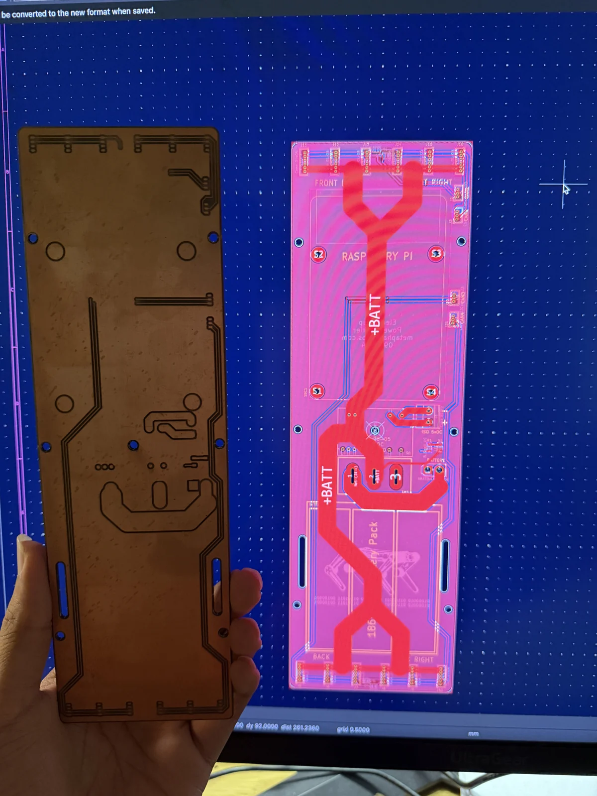

01 / PCB layout & fabrication
ElectroPup power-carrier PCB.
An open-source hardware adaptation: revising copper-to-copper clearance to 15 mil and documenting the resulting fabricated power-carrier board.
KiCad · Open-source adaptation · Fabricated board
- My contribution
- Copper-clearance revision
- Clearance
- 15 mil / 0.381 mm
- Milestone
- Board fabricated

The starting point
This work builds on ElectroPup by reubenstr, an open-source quadruped robot project. Its power-carrier PCB distributes power to the motor headers and carries the robot’s CAN bus connections.
My contribution
I modified the existing power-carrier PCB design by changing the copper-to-copper clearance to 15 mil (0.381 mm). This is a layout adaptation of the original board; credit for the underlying ElectroPup design belongs to its original creator.
The fabricated result
The photo documents the physical board after the clearance change, held beside the on-screen CAD layout. It captures the project’s fabrication milestone and the connection between the revised digital layout and the resulting hardware.
Open-source foundation
The original power-carrier files and ElectroPup electronics documentation provide the starting design and system context. This page documents my clearance modification and the fabricated result.